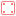
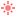
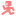
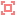

BALL ROLLER 3D
FULLUR LEIÐARVÍSIR
Skref fyrir skref leiðbeiningar frá byrjun til enda.
1. Nýtt Verkefni
Byrjum á því að opna Godot og búa til tómt verkefni.
- Smelltu á Create.
- Gefðu verkefninu nafn, t.d. "Ball Roller 3D".
- Veldu möppu til að geyma það í.
- Veldu Forward+ renderer (best fyrir góða 3D grafík á tölvum).
- Smelltu á Create til að opna verkefnið.
2. Sigling um 3D heiminn
Áður en við byrjum, þurfum við að kunna að hreyfa okkur í 3D glugganum. Það er mjög mikilvægt til að geta hannað borðin okkar!
- Hægri músarhnappur (halda inni): Snúa myndavél (Orbit).
- W, A, S, D: Fljúga um heiminn á meðan þú heldur hægri músarhnappi.
- Miðju músarhnappur (eða Shift + Hægri): Hliðra (Pan).
- Skrunhjól: Aðdráttur (Zoom in/out).
- F-takki: Fókusa beint á valda nóðu (mjög gagnlegt ef þú týnist!).
3. Aðalsenan (Main)
Við þurfum senu sem heldur utan um borðið okkar. Þetta er eins og heimurinn sjálfur.
- Í Scene flipanum, smelltu á 3D Scene (það býr til Node3D).
- Endurskírðu þessa nóðu í
Main(hægri smelltu og veldu Rename, eða ýttu á F2). - Vistaðu senuna sem
main.tscn(Ctrl+S).
4. Fyrsti Pallurinn (Gólfið)
Boltinn þarf eitthvað til að rúlla á. Við byrjum á einföldum kassa.
- Hægri smelltu á
Mainog veldu Add Child Node. - Leitaðu að MeshInstance3D og bættu því við. Þetta er nóða til að sýna 3D form.
- Hægra megin í Inspector, finndu Mesh eiginleikann (þar sem stendur <empty>).
- Smelltu og veldu New BoxMesh.
- Smelltu aftur á BoxMesh myndina til að opna stillingar þess. Settu stærðina (Size) á: X: 10, Y: 0.5, Z: 10. Þá færðu stóran flöt!
5. Gólfið gert "Snertanlegt"
Eins og er, er gólfið bara mynd (Mesh). Ef við setjum bolta þar, dettur hann beint í gegn! Við verðum að bæta við eðlisfræði (Physics).
- Veldu MeshInstance3D pallinn sem þú varst að búa til í Scene trénu.
- Efst í 3D glugganum á tækjastikunni, finndu takkann sem heitir Mesh.
- Smelltu á hann og veldu Create Collision Shape...
- Í glugganum sem opnast, veldu Static Body Child í fyrri fellilistanum og Trimesh í þeim seinni (venjulega sjálfgefið). Smelltu á Create.
VÁ! Godot bjó sjálfkrafa til 
6. Umhverfi og Sólin
Í nýjustu útgáfum Godot er mjög auðvelt að bæta við ljósi og himni (Environment) beint úr 3D glugganum.
- Líttu efst í 3D gluggann (við hliðina á View eða litlu sól-myndinni).
- Smelltu á þrjá lóðrétta punkta (⋮).
- Veldu Add Sun to Scene (Bætir við

DirectionalLight3D). - Smelltu aftur á punktana og veldu Add Environment to Scene (Bætir við WorldEnvironment).
Nú ætti heimurinn að vera bjartur og fínn með skuggum þegar þú spilar leikinn! Þú getur svo valið DirectionalLight3D eða WorldEnvironment í Scene trénu og fiktað í stillingunum í Inspector (t.d. breytt litnum á himninum eða birtunni).
7. Leikmaðurinn (Sena)
Nú er komið að stjörnu leiksins: Boltanum! Við búum til sér senu fyrir hann.
- Smelltu á Plúsinn (+) við hliðina á main.tscn flipanum efst til að gera nýja senu.
- Veldu Other Node sem rót (Root) senunnar.
- Leitaðu að RigidBody3D. Af hverju RigidBody? Af því við viljum að eðlisfræðin stýri boltanum þannig hann velti! (Godot 4.6 notar "Jolt Physics" sem er frábært í þetta).
- Endurskírðu nóðuna í
Playerog vistaðu semplayer.tscn.
8. Tvær tegundir af leikmönnum
Það eru tvær meginleiðir til að stjórna leikmanni í 3D:

CharacterBody3DDæmi: Super Mario eða venjulegir skotleikir (FPS).
Hér stjórnar þú algjörlega hvernig hluturinn hreyfist með kóða. Þyngdarafl og hraði er allt forritað af þér. Hluturinn "hreyfist og rennur" (move and slide) án þess að velta.
RigidBody3D
Dæmi: Rocket League eða okkar Ball Roller leikur.
Hér stjórnar Godot (og Jolt vélin) eðlisfræðinni. Hluturinn dettur, skoppar og rúllar af sjálfu sér. Við stjórnum honum með því að "ýta" á hann (bæta við krafti) frekar en að hreyfa hann beint.
9. Boltinn (Útlit og Skynjun)
Við verðum að gefa boltanum útlit og "collision" eins og við gerðum við gólfið.
- Bættu MeshInstance3D sem barni af Player. Settu Mesh í New SphereMesh.
- Bættu CollisionShape3D sem öðru barni af Player. Settu Shape í New SphereShape3D.
- Veldu
Playerrótarnóðuna. Í Inspector finndu Physics og breyttu Angular Damp í t.d.1.5. Þetta gerir það að verkum að boltinn rúllar ekki endalaust heldur hægir aðeins á sér, sem gerir stýringuna þægilegri.
10. Stýringar (Input Map)
Segjum tölvunni hvaða takka á lyklaborðinu við viljum nota.
- Farðu efst í Project -> Project Settings.
- Veldu flipann Input Map.
- Skrifaðu nafn á nýrri aðgerð (Action) í kassann og ýttu á Add. Búðu til fjórar aðgerðir:
move_forward(Bættu við W eða Up örinni)move_back(S eða Down)move_left(A eða Left)move_right(D eða Right)
11. Forritun á Bolta (Script)
Bætum kóða á boltann. Veldu Player nóðuna og smelltu á  Attach Script.
Attach Script.
extends RigidBody3D
@export var rolling_force = 40.0
func _physics_process(delta):
# Fáum stefnu frá lyklaborðinu (-1 til 1)
var input_dir = Input.get_vector("move_left", "move_right", "move_forward", "move_back")
# Búum til kraft vigur (Vector3). X ás og Z ás (Y er upp).
var force = Vector3(input_dir.x, 0, input_dir.y) * rolling_force
# Bætum krafti við miðju boltans til að láta hann velta
apply_central_force(force)Þetta tekur inntak frá okkur og ýtir boltanum stöðugt, eðlisfræði-vélin sér svo um að láta hann rúlla!
12. Hópar (Groups)
Líkt og í Space Invaders, viljum við að aðrir hlutir (eins og peningar eða dauða-svæði) viti auðveldlega hver leikmaðurinn er. Notum hópa!
- Hafðu
Playernóðuna valda. - Farðu í Groups flipann í hægra spjaldinu (við hliðina á Inspector).
- Sláðu inn
playerog smelltu á Add.
13. Sett í Aðalsenuna
Nú fer þetta að verða að alvöru leik!
- Farðu til baka í
main.tscn. - Smelltu á Instantiate Child Scene takkann (keðjan) fyrir ofan Scene tréð (eða ýttu á Ctrl + Shift + A).
- Veldu
player.tscnaf listanum og smelltu á Open. - Mikilvægt: Veldu Player í senunni og dragðu hann aðeins upp (græna örin (Y)) svo hann byrji fyrir ofan gólfið, annars festist hann!
14. Myndavélin (Camera)
Það er langbest að geyma myndavélina inni í Player senunni. Þá er leikmaðurinn "tilbúinn" hvar sem við setjum hann.
- Opnaðu
player.tscnsenuna aftur. - Bættu Camera3D sem barni af
Player. - Færðu hana fyrir aftan og ofan boltann (t.d. Position: X: 0, Y: 4, Z: 8).
- Hallaðu henni niður á boltann (Rotation X u.þ.b. -20 gráður).
Vandamál: Af því að Player er RigidBody sem veltur, mun myndavélin velta 360° með honum og gera okkur sjóveik! Við lögum það með Scripti á næstu glæru.
15. Fylgi-Myndavél (Script)
Bættu  Script á
Script á Camera3D í Player senunni.
extends Camera3D
@export var offset = Vector3(0, 4, 8)
func _ready():
# Aftengir myndavélina frá snúningi boltans!
top_level = true
func _physics_process(delta):
var target_pos = get_parent().global_position + offset
# Mjúk hreyfing (lerp) að nýja staðnum
global_position = global_position.lerp(target_pos, delta * 5.0)
# Horfa alltaf á boltann
look_at(get_parent().global_position)Snilld! Nú er Player senan alveg sjálfstæð og eltir boltann. Hún virkar í hvaða borði sem er án þess að þurfa að stilla eitthvað í Main!
16. Horfa í kringum sig (Mús)
Það er langbest að geta notað músina til að líta í kringum sig. Bætum þessu við Camera3D scriptið okkar:
var mouse_sensitivity = 0.005
func _ready():
top_level = true
# Felur músina og bindur hana við leikinn
Input.mouse_mode = Input.MOUSE_MODE_CAPTURED
func _unhandled_input(event):
# Skynjum þegar músin hreyfist
if event is InputEventMouseMotion:
# Snúum offset-inu til hliðar miðað við hreyfingu músarinnar
offset = offset.rotated(Vector3.UP, -event.relative.x * mouse_sensitivity)Prófaðu núna (F5). Þú getur snúið myndavélinni umhverfis boltann! (Ýttu á ESC til að fá músina aftur).
17. Hreyfing miðað við sjónarhorn
Nú er vandamál: "Áfram" (W) er alltaf sama átt í heiminum, sama hvert myndavélin horfir. Lögum það inni í Player scriptinu.
Skiptu út `force` línunum inni í `_physics_process` fyrir þetta:
var input_dir = Input.get_vector("move_left", "move_right", "move_forward", "move_back")
# Finnum áttirnar sem myndavélin horfir
var camera = $Camera3D
var cam_forward = -camera.global_transform.basis.z
var cam_right = camera.global_transform.basis.x
# Pössum að horfa beint áfram (ekki upp eða niður)
cam_forward.y = 0
cam_right.y = 0
cam_forward = cam_forward.normalized()
cam_right = cam_right.normalized()
# Reiknum nýjan kraft miðað við myndavélina (W skilar -1, svo við snúum því við)
var force = (cam_right * input_dir.x + cam_forward * -input_dir.y) * rolling_force
apply_central_force(force)18. Dauðasvæði (Fall Zone)
Hvað gerist ef þú keyrir út af pallinum? Boltinn dettur að eilífu. Við grípum hann og endurræsum borðið.
- Bættu

Area3D viðMainsenuna og skírðu þaðFallZone. - Bættu CollisionShape3D við
FallZone. Settu það sem stóran kassa (BoxShape3D). Mikilvægt: Smelltu á BoxShape3D myndina í Inspector og breyttu Size eiginleikanum beint í stærðina (100, 2, 100). Ekki nota Scale verkfærið á sjálfa Collision nóðuna! - Færðu
FallZonenóðuna langt niður undir borðið (Y = -10).
19. Tengjum Dauðasvæðið
Við viljum að Area3D "skynji" þegar boltinn klessir á kassan undir borðinu.
- Bættu Script við
FallZone. - Farðu í Signals flipann hægra megin (við hliðina á Inspector) og tvísmelltu á merkið (signal)
body_entered(body: Node3D). Tengdu það við scriptið.
extends Area3D
func _on_body_entered(body):
# Athugum hvort það var boltinn okkar sem datt!
if body.is_in_group("player"):
# Endurræsum núverandi senu!
get_tree().reload_current_scene()20. Peningar (Coins)
Gerum leikinn áhugaverðari. Safnaðu gullpeningum! Búum til nýja senu.
- Smelltu á + til að gera nýja senu. Rótin á að vera Area3D (Kallað
Coin). - Bættu við MeshInstance3D (CylinderMesh).
- Gerðu CylinderMesh peningalegan (stækkaðu X og Z, minnkaðu Y, t.d. Hæð: 0.1, Radíus: 0.4). Snúðu honum uppá rönd og gefðu honum gulan Material.
- Bættu við CollisionShape3D (CylinderShape3D) sem er aðeins stærra en peningurinn.
- Vistaðu senuna sem
coin.tscn.
21. Snúningur og Söfnun
Bættu scripti við Coin rótina til að láta hann snúast og hverfa.
- Tengdu
body_entered(body)signalið alveg eins og í FallZone.
extends Area3D
# Hversu hratt peningurinn snýst
var rotation_speed = 3.0
func _process(delta):
# Látum hann snúast um Y ásinn allan tímann
rotate_y(rotation_speed * delta)
func _on_body_entered(body):
if body.is_in_group("player"):
# Ef við hefðum stigakerfi, myndum við kalla á það hér!
# Í bili, látum við peninginn bara hverfa.
queue_free()22. Marklínan (Finish Line)
Borðið þarf enda. Búðu til nýja senu nákvæmlega eins og peninginn.
- Ný sena -> Area3D (Kallað
Goal). - Gefðu því flott Mesh (T.d. stór glóandi grænn BoxMesh).
- CollisionShape3D sem hylur svæðið.
- Tengdu
body_enteredmerkið (signal) í script.
extends Area3D
func _on_body_entered(body):
if body.is_in_group("player"):
print("MARK! ÞÚ VANNST!")
# Þegar UI er komið getum við sýnt "You Win" skjá.
# Í bili byrjum við borðið aftur þegar maður vinnur.
get_tree().reload_current_scene()23. Hönnun Borðsins
Nú er allt tilbúið vélrænt (mechanics). Tími til að sýna hönnunarhæfileikana!
Farðu í main.tscn og notaðu verkfærin til að byggja flókna braut úr kössum, fylltu hana af peningum og settu Goal í endann.
Ath: Í Godot 4.6 eru Select (Q) og Transform (W, E, R) verkfærin aðskilin. Veldu fyrst hlutinn (Q) og færðu/snúðu honum svo (W, E).
- Ctrl + D: Fjölfalda (Duplicate) hluti hratt. Frábært fyrir palla og peninga!
- W: Færa palla (Move) til að raða þeim.
- E: Snúa pöllum (Rotate) til að búa til brekkur niður eða upp.
- R: Stækka/minnka palla (Scale). Búðu til örmjóar brýr eða víða velli!
Passaðu að FallZone sé alltaf nógu stórt til að grípa leikmanninn hvar sem hann dettur niður.
FRÁBÆRT HJÁ ÞÉR!
Þú ert komin(n) með "Retro Ball Roller" alveg eins og gömlu leikirnir!
Bónusverkefni: Prófaðu að bæta leikinn með því að leika þér með fleiri liti, áferðir (Materials) á pallana, ryk/elda-agnir (Particles), eða jafnvel forrita stig og tímamæli í scriptið!
Athugið: Í næsta verkefni (sem við höfum eina viku í) munum við fínpússa leikinn og bæta við fallegu notendaviðmóti (UI), hljóðbrellum og tónlist. Geymdu það þangað til!
SKIL Á INNU
Til þess að kennarinn geti opnað leikinn á sinni tölvu þarftu að skila honum rétt!
- 1. Lokaðu Godot alveg (til að passa að allt sé vistað).
- 2. Finndu möppuna þar sem þú vistaðir verkefnið í tölvunni þinni.
- 3. Hægri smelltu á möppuna og veldu Compress to ZIP file (eða Send to -> Compressed (zipped) folder).
- 4. Skilaðu .zip skránni á Innu.
Aftur í valmynd